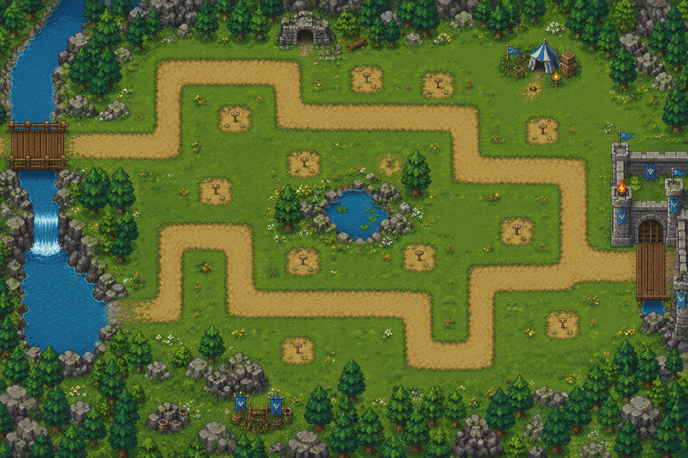

Tower Defense - Captura de coordenadas
Hacé click en el mapa para guardar puntos normalizados entre 0 y 1. Cada ruta puede tener uno o varios spawns y finales.

Hacé click en el mapa para guardar puntos normalizados entre 0 y 1. Cada ruta puede tener uno o varios spawns y finales.
